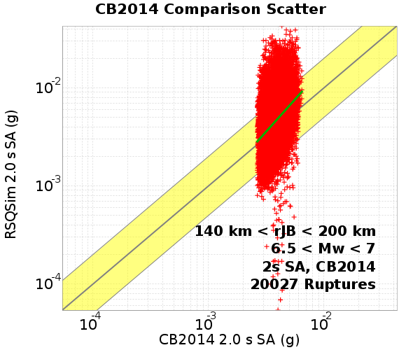
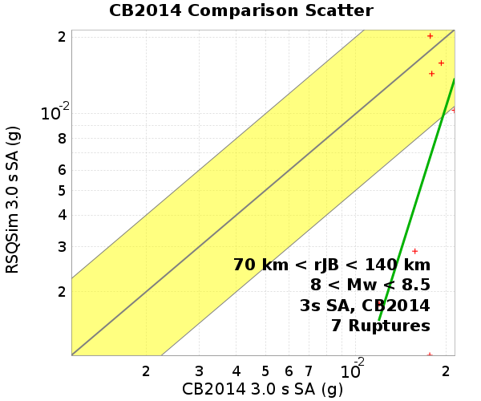
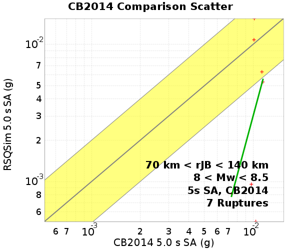
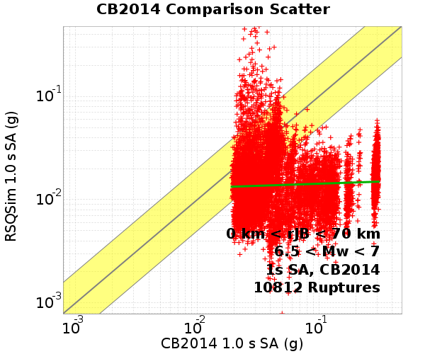
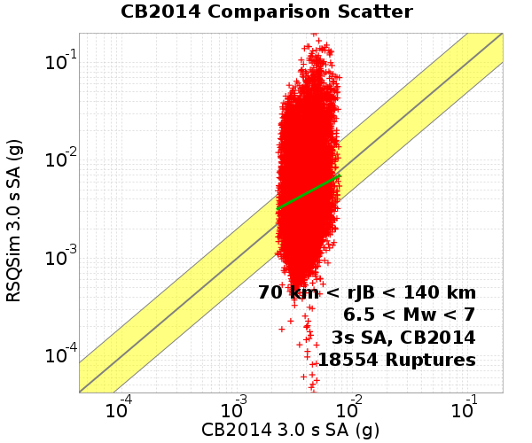
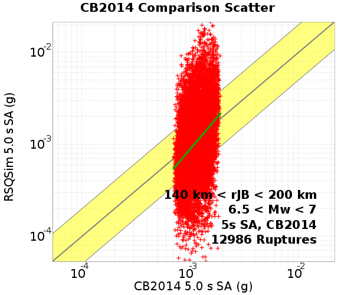
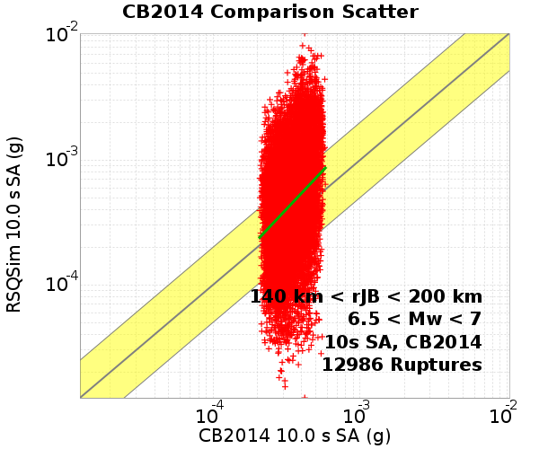
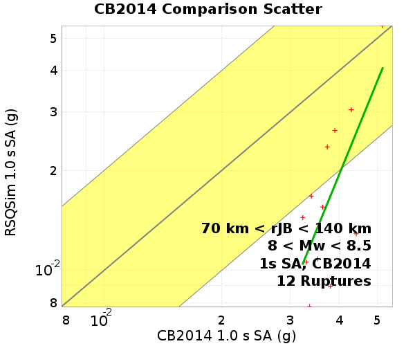
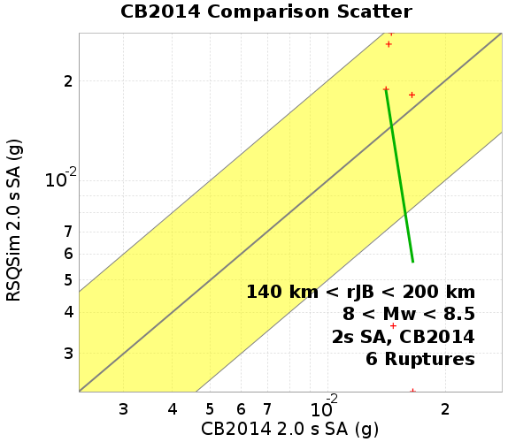
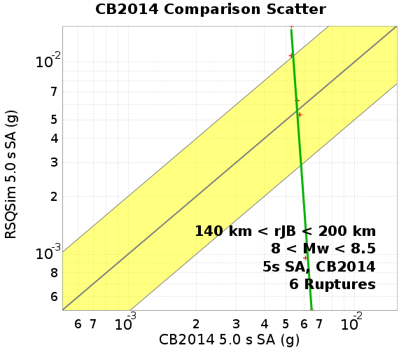

Bruce 2194 Long BBP/CB2014 GMPE Comparisons
GMPE: Campbell & Bozorgnia (2014)
| Catalog | Bruce 2194 Long |
|---|
| Author | Bruce Shaw (extended by Jacqui Gilchrist), 2017/08/31 |
| Description | Catalog with decent large event scaling and distribution of sizes while not using any of the enhanced frictional weakening terms. |
| Fault/Def Model | Fault Model 3.1, Geologic |
| Slim Velocity | 1.0 m/s |
| Average Element Area | 1.34 km^2 |
Table Of Contents
Site USC
(top)
Location: 34.0192, -118.286
66200 ruptures within 200.0 km
USC, 6.5 < Mw < 7
USC, 6.5 < Mw < 7, Scatter Plots
(top)
| SA Period | 0 km < rJB < 70 km | 70 km < rJB < 140 km | 140 km < rJB < 200 km |
|---|
| 1 s |  |  |  |
| 2 s |  |  |  |
| 3 s | |  | |
| 5 s |  | |  |
| 10 s |  |  |  |
USC, 6.5 < Mw < 7, Standard Normal Plots
(top)
| 0 km < rJB < 70 km | 70 km < rJB < 140 km | 140 km < rJB < 200 km |
|---|
 |  |  |
USC, 7 < Mw < 8
USC, 7 < Mw < 8, Scatter Plots
(top)
| SA Period | 0 km < rJB < 70 km | 70 km < rJB < 140 km | 140 km < rJB < 200 km |
|---|
| 1 s |  |  | |
| 2 s | |  | |
| 3 s |  | | |
| 5 s |  | | |
| 10 s |  | | |
USC, 7 < Mw < 8, Standard Normal Plots
(top)
| 0 km < rJB < 70 km | 70 km < rJB < 140 km | 140 km < rJB < 200 km |
|---|
 |  |  |
USC, 8 < Mw < 8.5
USC, 8 < Mw < 8.5, Scatter Plots
(top)
| SA Period | 0 km < rJB < 70 km | 70 km < rJB < 140 km |
|---|
| 1 s |  |  |
| 2 s | |  |
| 3 s | |  |
| 5 s | |  |
| 10 s | |  |
USC, 8 < Mw < 8.5, Standard Normal Plots
(top)
| 0 km < rJB < 70 km | 70 km < rJB < 140 km |
|---|
 |  |
Site SBSM
(top)
Location: 34.064987, -117.29201
67441 ruptures within 200.0 km
SBSM, 6.5 < Mw < 7
SBSM, 6.5 < Mw < 7, Scatter Plots
(top)
| SA Period | 0 km < rJB < 70 km | 70 km < rJB < 140 km | 140 km < rJB < 200 km |
|---|
| 1 s |  | | |
| 2 s | | |  |
| 3 s | |  |  |
| 5 s |  | |  |
| 10 s | | |  |
SBSM, 6.5 < Mw < 7, Standard Normal Plots
(top)
| 0 km < rJB < 70 km | 70 km < rJB < 140 km | 140 km < rJB < 200 km |
|---|
 |  |  |
SBSM, 7 < Mw < 8
SBSM, 7 < Mw < 8, Scatter Plots
(top)
| SA Period | 0 km < rJB < 70 km | 70 km < rJB < 140 km | 140 km < rJB < 200 km |
|---|
| 1 s |  | | |
| 2 s |  |  |  |
| 3 s | |  | |
| 5 s | | |  |
| 10 s |  |  | |
SBSM, 7 < Mw < 8, Standard Normal Plots
(top)
| 0 km < rJB < 70 km | 70 km < rJB < 140 km | 140 km < rJB < 200 km |
|---|
 |  |  |
SBSM, 8 < Mw < 8.5
SBSM, 8 < Mw < 8.5, Scatter Plots
(top)
| SA Period | 0 km < rJB < 70 km | 70 km < rJB < 140 km | 140 km < rJB < 200 km |
|---|
| 1 s |  |  |  |
| 2 s |  |  |  |
| 3 s |  |  |  |
| 5 s |  | |  |
| 10 s | |  | |
SBSM, 8 < Mw < 8.5, Standard Normal Plots
(top)
| 0 km < rJB < 70 km | 70 km < rJB < 140 km | 140 km < rJB < 200 km |
|---|
 |  |  |